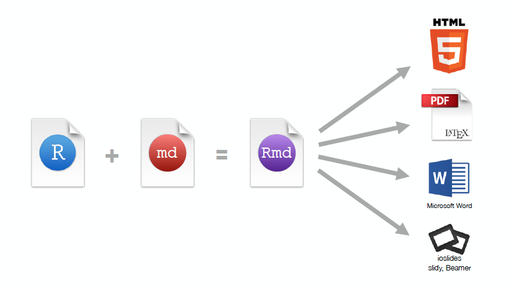
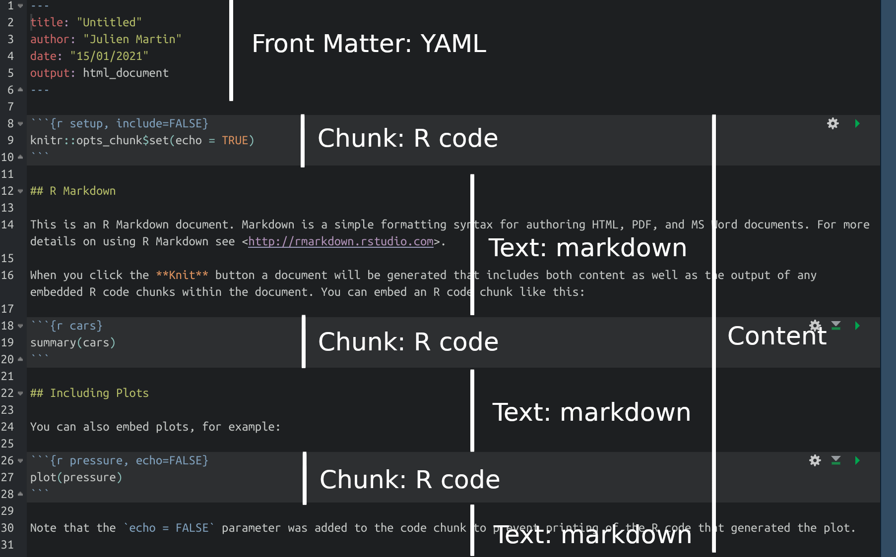
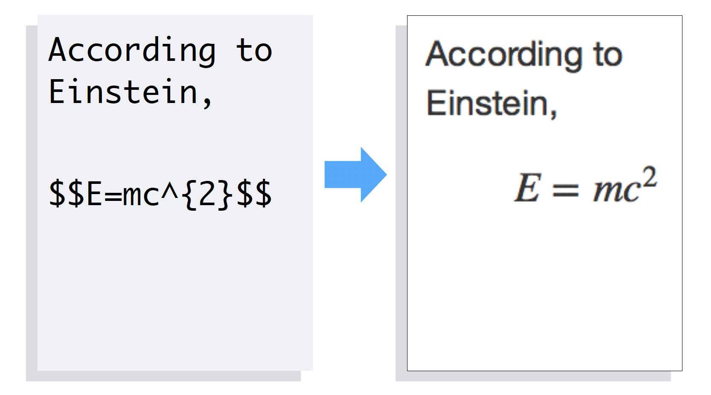
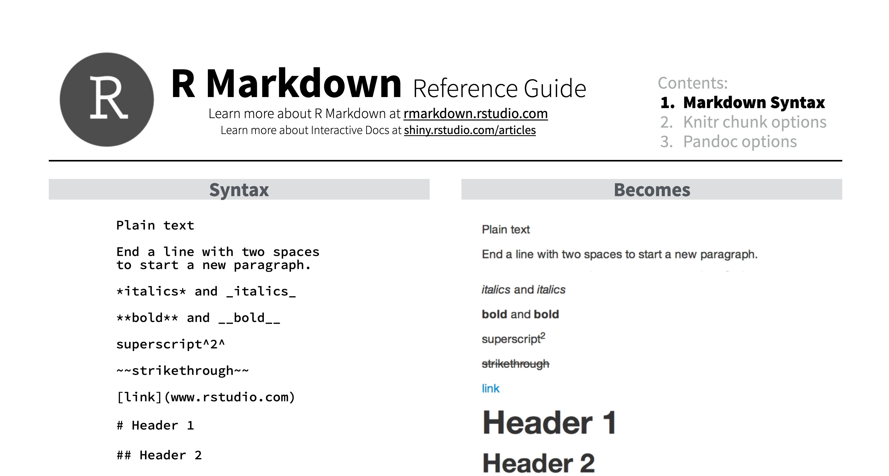
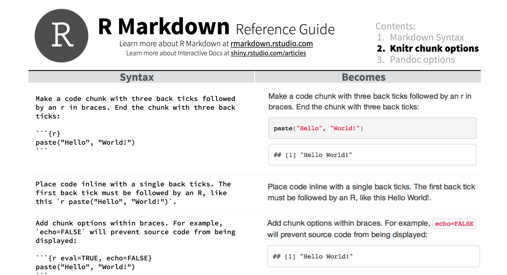
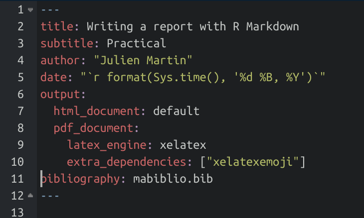
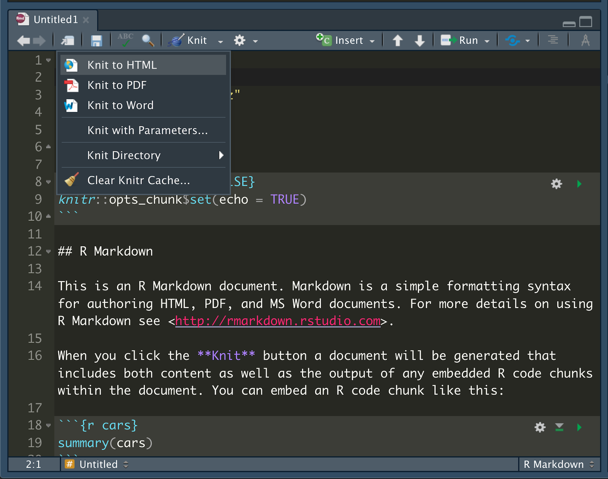
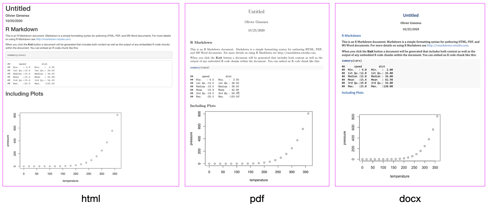
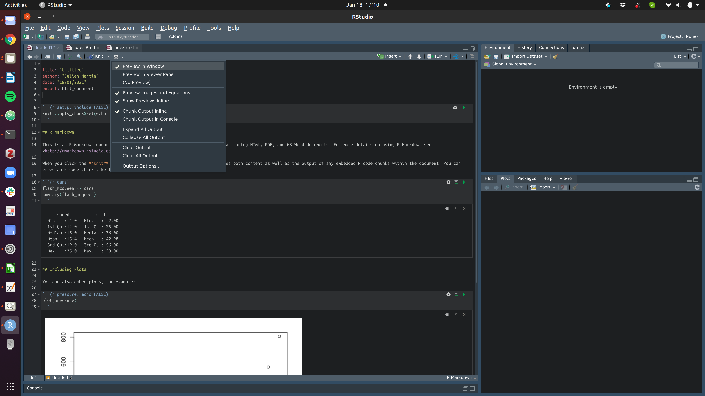
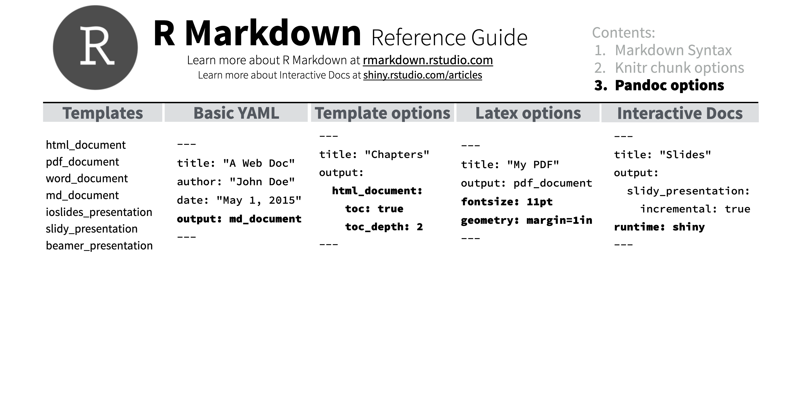

Writing dynamic and reproducible documents
An introduction to R Markdown / Quarto
Julien Martin
BIO 8940 - Lecture 2
2024-05-16
Credit: Ignasi Bartomeus, PhD

How can you reproduce results?
What do we need to make research reproducible?
- Something to integrate text, figures and code
R,Python, etc
- Something that can be continuously edited and updated
- Living or dynamic document
- Something that can be easily used in versioning tools
- Git
Quarto ?
multi-language, next generation version of R Markdown
include many new new features and capabilities
Like R Markdown, Quarto uses knitr to execute R code, and is therefore able to render most existing Rmd files without modification.

R Markdown workflow

Quarto workflow

Structure of a Rmd/qmd document
Rmd/qmd document

Rmd/qmd document
Markdown
What is Markdown?
- A way to write stuff
- Mostly plain words, with some formating
Websites that use Markdown
- GitHub https://github.com/
- StackOverflow https://stackoverflow.com/
- HackMD https://hackmd.io
- Many more
Headers
- Use # to create headers
- Multiple #’s create lower level headers
Text
- Text is rendered as plain text
Lists
- Use asterisks to make bullet points
- Use numbers to make numbered lists
- Use 4 spaces or 1 tab for indentation
Hyperlinks
- To add a hyperlink, put your text between brackets
- Then place the URL between parentheses
Images
- Use a link preceded by an ! to insert an image
- The link text should be
- a URL if the image is hosted online
- a file path if the image is saved on your computer
Equations
- Write equations with Latex syntax
Equation blocks
Tables
| header A | header B | header C |
|:---------:|:--------:|---------:|
| left | center | right |
Table: This is a title| header A | header B | header C |
|---|---|---|
| left | center | right |
A bit of a hassle…
Wait for next section to learn how to generate tables from
R
R Markdown Reference Guide
https://rstudio.com/wp-content/uploads/2015/03/rmarkdown-reference.pdf
Knitr Code chunks
Embed code
- Insert chunk of
Rcode - Code will run and include results.
Inline code
- Place code in a sentence with
- Code will be replaced with results
Chunk options
Rmd (R markdown) and qmd (quarto) differ:
- Rmd: chunk options on one line between the {} after the r
- qmd: either as Rmd or within the chunk with yaml style notation
echo
echo = FALSEor#| echo: falsehides code.
eval
eval = FALSEor#| eval: falseprevents code from being run- No results is displayed, only code
fig.height, fig.width
- Specify dimension of plots (in inches) with fig.width and fig.height
- Separate multiple arguments with commas.
message
message = FALSEor#| meassage: falseprevents messages from appearing in output
Default chunk options
Repeating chunk options can be painful
If you have
echo = FALSEin every single chunk, how to set the default chunk option toecho = FALSE?Use
knitr::opts_chunk$set(echo = FALSE)You may overwrite the default for each chunk
For chunk options, check out https://yihui.name/knitr/options/
Including tables
# cars is a built-in-to-R data set of cars and their stopping distances
cars %>%
head(4) %>%
knitr::kable(format = "html", caption = "A kable table")| speed | dist |
|---|---|
| 4 | 2 |
| 4 | 10 |
| 7 | 4 |
| 7 | 22 |
- The
kablepackage is often used with thekableExtrapackage - A number of other packages are available for making pretty tables, by far my favourite is
gtusing similar approach to table thatggplothas to figures
R Markdown Reference Guide
https://rstudio.com/wp-content/uploads/2015/03/rmarkdown-reference.pdf
YAML: Yet Another Markup Language
YAML in brief
Contains the metadata of the document
Starts and ends by three dashes
Comes first in the document
Simplest example
Knit
Output formats
Appearance and style
Rmd
In HTML output, you can use
themeor a custom .css style sheetthemeoptions (bootswatch.com) : “cerulean”, “journal”, “flatly”, “darkly”, “readable”, “spacelab”, “united”, “cosmo”, “lumen”, “paper”, “sandstone”, “simplex”, “yeti”You may also use LaTeX templates with R Markdown, and write reproducible scientific paper
qmd
this is were Quarto is leaps beyong R markdown
excellent doc on the website
Managing bibliography
Reference file
- Put references in a plain text file with the extension .bib, in BibTex format (my advice: use Zotero and
betterbibtexextension for dynamic file)
*@article{Shea2014,
author = {Shea, Nicholas and Boldt, Annika},
journal = {Trends in Cognitive Sciences},
pages = {186--193},
title = {{Supra-personal cognitive control}},
volume = {18},
year = {2014},
doi = {10.1016/j.tics.2014.01.006},
}- Reference this file in your YAML header and add a csl style for formatting (browse through and download styles at zotero.org/styles)
Citations
- In your text, citations go inside brackets and separated by semicolons
This…
Blah blah (Shea2014?, Lottridge2012?).
turns into this…
Blah blah (Shea et al. 2014; Lottridge et al. 2012).
Citations
- In your text, citations go inside brackets and separated by semicolons
turns into this…
Blah blah (Shea et al. 2014; Lottridge et al. 2012).
Shea et al. (2014) says blah.
Blah blah (see Shea et al. 2014, 33–35; also Wu 2016, ch. 1).
Citations
For an easy way to insert citations, try the citr RStudio add-in.
If you are using Zotero, then RStudio can link directly for both Rmd and qmd files (same for VScode)

Notebook vs console in Rstudio
Notebook and console
In Rstudio, Rmarkdown file = notebook
Meaning that R output:
- are embedded in doc
- not available in R envir and console
If you don’t like the notebook and want the console, add to YAML header
editor_options:
chunk_output_type: consoleNotebook
Console

R Markdown Reference Guide
https://rstudio.com/wp-content/uploads/2015/03/rmarkdown-reference.pdf
What else can we do with R Markdown/ Quarto?
Let’s have a tour

To go further
Most of what works for R markdown works for Quarto
R Markdown cookbook
R Markdown Guide
Quarto website
Happy coding

BIO 8940 - Lecture 2